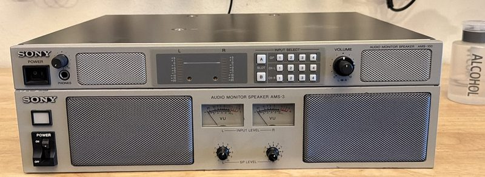
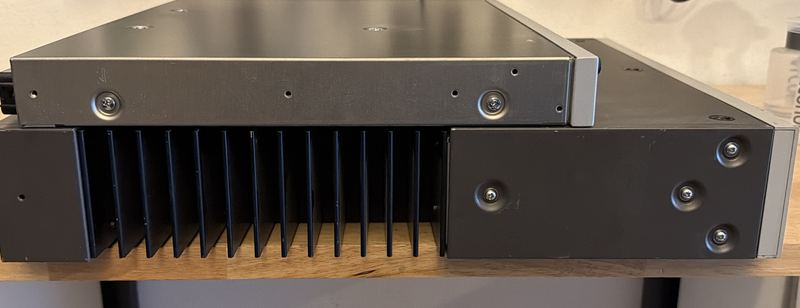
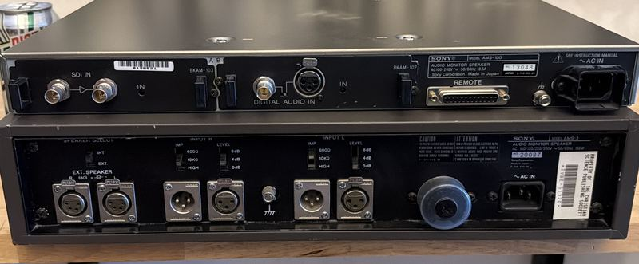

Ancestor and Descendant
Two Sony audio monitors, built to do the same job in the same kind of room, roughly thirty years apart. Stack one on the other and the entire history of broadcast engineering is sitting on your bench.
Every rack of video monitors needs a way to hear what it is looking at. In a studio or a machine room that job goes to an audio monitor speaker — a self-powered box that takes the audio riding alongside the picture and lets an engineer hear whether it is there, whether it is clipping, and which channel is which. Sony made them for decades. Two of them live here, and they could hardly be less alike.
The AMS-100 is the modern one, and the one that actually works in the rack in the garage. It is slim, light, and unmistakably digital: SDI in, digital audio in, plug-in option cards, a remote port on the back, bar-graph level meters and a keypad on the front. It is designed to disappear into a rack and be driven by something else.
The AMS-3 is its ancestor, and it disappears into nothing. It weighs 35 lbs — the same as a 14-inch PVM — because it does its work the old way: a real transformer, a real amplifier, and a bank of heatsink fins deep enough to make the whole chassis twice as tall as the newer unit. Its front panel has two analog VU meters with needles that swing, an input level knob and a speaker level knob, and nothing else. Its back panel wants balanced XLR, with an impedance switch and a level switch per channel, plus outputs for external speakers. And it is loud — comfortably loud enough to be heard over a room full of running CRTs, which is exactly the room it now lives in.


The back panels tell the story even more plainly than the profile does. One unit is waiting for a digital stream; the other is waiting for a pair of balanced cables and a decision about impedance. Same shelf, same purpose, two completely different centuries of thinking about how sound gets from one box to another.

A previous life
There is one more thing on the back of the AMS-3, and it is the best part. A printed asset tag, still stuck to the chassis, reading PROPERTY OF THE CHRISTIAN SCIENCE PUBLISHING SOCIETY — barcoded, numbered, and signed out like a stapler. Before this thing turned up untested in a box in San Clemente, it was inventory in somebody's broadcast plant, bolted into a rack, listening to a feed that mattered to somebody's deadline.
That is the whole appeal of professional gear, really. A consumer speaker from 1985 would be landfill by now. This one was built to be racked, powered, ignored, and depreciated for decades — and after all of that, the worst thing wrong with it is a scratchy volume pot. It is on the bench now, waiting for a can of contact cleaner and an afternoon.
The deep technical write-up on the AMS-100 — history, internals, and module configurations — is a separate piece still in progress. This one is just about what happens when you put the two of them on top of each other.